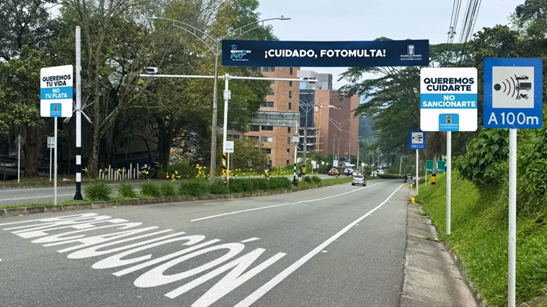
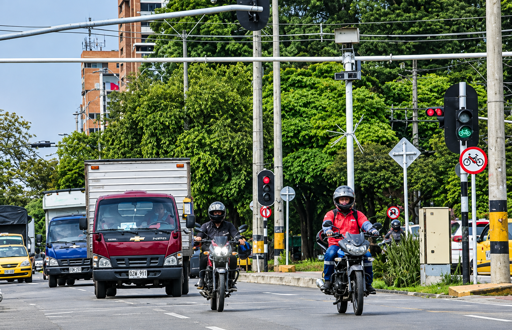
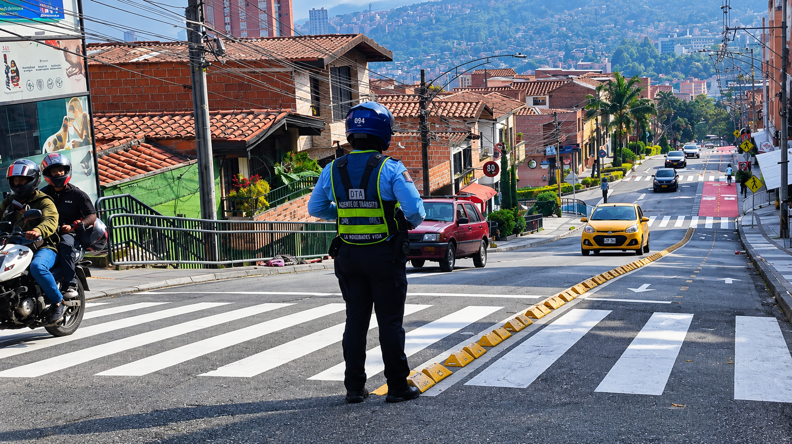

Esta idea busca modificar el esquema actual de sanciones para que las multas tengan un menor impacto en el bolsillo de los actores viales y no ser una carga económica, al tiempo que se revisa el funcionamiento de otros servicios respectivos al tránsito. Según el Gobierno, el objetivo es que las herramientas de control vial estén orientadas principalmente a la seguridad de quienes transitan este lugar y no al lucro del recaudo que se obtiene de dichas multas.
Esta iniciativa aún no está vigente para las multas que se le proporcionan a los conductores, ya que al tratarse de un proyecto, este debe pasar por diferentes instancias y ser evaluado por el Congreso antes de convertirse en una norma. De esta forma, las condiciones de pagos y las multas que se le atribuyen a los infractores seguirán rigiendo de acuerdo con el Código Nacional de Tránsito mientras no se apruebe una reforma concreta con sus valores, la manera de regir en los ciudadanos y las exigencias pertinentes para obtener un buen resultado de la propuesta.
Frente a todas las buenas expectativas que tiene la ciudadanía colombiana sobre este proyecto, la mirada de un abogado especialista en tránsito dice que una declaración presidencial no es suficiente para aplicar el descuento de forma inmediata.
"La mera aseveración del presidente en este momento no es condición suficiente para aplicar la medida. En Colombia existe una Rama Legislativa y por el principio de legalidad, tendría que pasar una ley estatutaria por el Congreso y el Senado que determine si esa reducción se hará efectiva solo para fotomultas o para las más de 140 infracciones que tiene el Código Nacional de Tránsito", explicó Anderson Giraldo, Abogado especialista en tránsito, donde en esta misma forma dio a conocer la incertidumbre en los comparendos ya realizados por la ley anteriormente: "Esa nueva ley tendría que especificar si será retroactiva o si aplicará únicamente a partir de su expedición para las fotodetecciones que se impongan desde esa fecha. Lo habitual en el ordenamiento jurídico es que la norma comience a regir hacia el futuro".
Con la explicación del abogado Giraldo nos da un indicio de cómo será el proceso de la nueva propuesta y de esta misma forma enseñar a los ciudadanos que antes de empezar a regirla se tendrá que informar de forma correcta para conocer sus indicaciones antes y después de la ley.
De esta misma manera, el problema no radica únicamente en el monto de las tarifas, sino en las fallas de notificación ciudadana, donde el abogado dijo que el problema es la forma en que se le notifica al ciudadano y no porque el Estado lo haga mal. Aquí tiene lugar el ciudadano a la hora de actualizar sus datos personales en el RUNT. Al ya no estar al día se pierde un hilo jurídico del proceso y de esta forma se queda sin la opción de ejercer su derecho de contradicción o acceder a los beneficios impuestos por la ley.

Por su parte, también toma la palabra la secretaria de movilidad de Medellín, Miriam Restrepo. Ella investigó que desviste la realidad del mercado de las fotodetecciones y la crisis que se tiene que enfrentar la ciudadanía a la hora de observar la veracidad de estas nuevas leyes. Restrepo dice que esta iniciativa llegó en un momento de tensión institucional: "En paralelo a la propuesta de reducción, la Superintendencia y el Ministerio de Transporte abrieron una investigación contra 37 organismos de tránsito por presuntas irregularidades, lo que ha generado desconfianza ciudadana sobre la proporcionalidad y legitimidad de estas sanciones".
Donde se respalda en el boletín oficial de la Superintendencia de Transporte, la secretaria detalló las abrumadoras cifras del sistema a nivel nacional durante el último año: "De más de 7,5 millones de fotomultas, 1.582.398 ya fueron pagadas, generando un recaudo superior a $1,05 billones y 5.832.906 comparendos permanecen pendientes de pago, lo que equivale a cerca del 78 % del total. Es decir, 4 de cada 5 fotomultas no se cancelan".
Estas cifras evidencian que el sistema no tiene un orden para realizar sus cobros y de esta forma respalda la postura jurídica de Giraldo, quien señala que el problema no es la reducción, ni el precio de la tarifa; son las fallas que existen al momento de notificar al ciudadano. Esto genera dudas sobre la efectividad de estas medidas, pues mientras algunas personas podrían beneficiarse de las reducciones, otras pueden desconocerlas, dejar pasar el tiempo y terminar acumulando sus deudas hasta convertirlas en obligaciones difíciles de asumir.

El impacto de esta propuesta hace generar un contraste entre las intenciones de un Gobierno donde solo propone un “proyecto” y las realidades de los municipios, debido a que mientras el Gobierno busca evitar que las multas impacten en el bolsillo de los hogares colombianos, la secretaria de movilidad advierte sobre una tensión no resuelta entre lo que se intenta prevenir o el riesgo que se aproxima para las finanzas y la seguridad.
Restrepo dijo que una menor tarifa por infracción implicaría menor recaudo para los organismos de tránsito, en momentos en que ya se habla de posibles devoluciones millonarias por los comparendos anulados, lo que añadiría presión fiscal a estas entidades. Además, señaló que el comportamiento en vías podría verse afectado si estas multas se reducen ya que se va el efecto disuasorio, por lo cual se tienen que implementar otras medidas para evitar problemas a futuro frente a la iniciativa que se plantea.
Se evidencia en esta parte como se contrasta la preocupación con el especialista en tránsito y de esta forma lo que dice se sustenta en el Artículo 160 de la Ley 769 de 2002(Código Nacional de tránsito), el cuál ordena que los montos recaudados por multas y sanciones se destinan a proyectos de seguridad vial y un recorte de esta obligaría a buscar nuevas formas de financiar la educación y los materiales que se obtienen con este recaudo para la prevención de accidentes, dejando en duda si este proyecto terminará siendo un verdadero alivio social o un retroceso en la seguridad del país.

Esta idea que busca reducir el 50% el valor de las fotomultas es un alivio para el bolsillo de la ciudadanía, pero esta enfrenta barreras que desde lo jurídico requiere una ley la cual pondría en riesgo los recursos de seguridad de vial. Además, con fallas en las notificaciones del RUNT, bajar los precios no soluciona el problema de fondo y de esta manera el reto para el Gobierno y el Legislativo será encontrar el balance económico para los hogares sin quitarle las ayudas para mantener un control y prevención de accidentes en las vías.